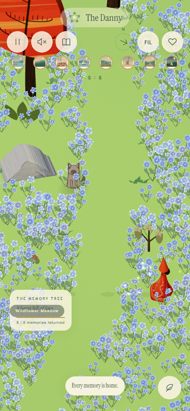

Soft lime-green grass
A bright green floor with soft watercolor patches and short darker green tufts, following the latest grass reference. Wind, grass contact and glowing flower petals are still active.

The traveler walks through flowers, then stops while the petals fade. The clip uses fixed simulation steps.
Phone view:
